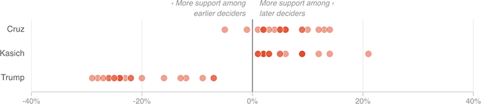

Trump’s Voters Are Early Deciders
Each dot represents a candidate’s share of one state’s later deciders (that is, who decided before the last few days) minus the candidate’s share of earlier deciders. A dot farther to the left would be a state where a candidate performed better among early than late deciders.
